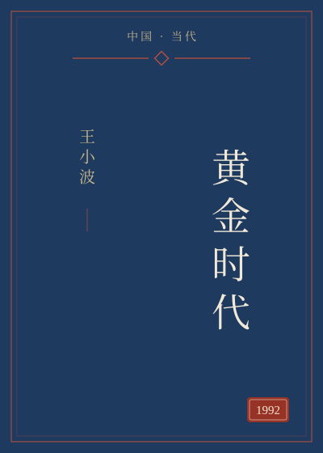
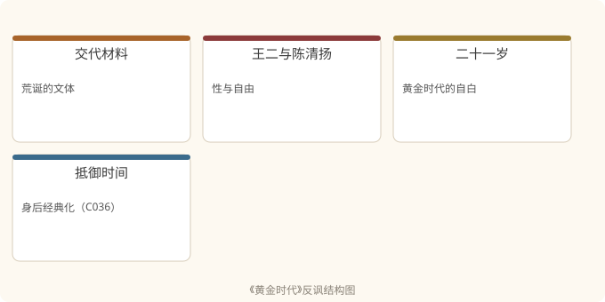

黄金时代
一、基本信息
| 作者 | 王小波 |
|---|---|
| 成书/出版 | 出版年待核（中国作家网 C036：'在此后的20年里，他的书至少被20家出版机构出版'——1992年华夏出版社说通说待核） 王小波的小说成功抵御了时间（中国作家网转载中国青年报）（官方文学机构） |
| 国别/地区 | 中国 |
| 时代 | 现当代 · 当代 |
| 体裁 | 中篇小说 |
| 语言 | 汉语（白话·反讽体） |

《黄金时代》反讽结构图（主题·结构图）
二、创作背景
中国作家网（C036）：1997年4月11日王小波猝然离世；导演程耳评价：'20多年过去了，王小波先生的小说成功抵御了时间。他的语言与叙事中的自由，他的冷静与深情'；'他的幽默与荒诞，使他腾空而起，时至今日，仍然俯视着今天的时代'；称《黄金时代》为'这部王小波最重要的作品'。
李银河评价（C036）：他'为我们构筑了一个绝对美好、绝对超凡脱俗的精神家园'。
三、内容脉络
云南插队的王二与陈清扬：以'交代材料'的荒诞文体写性与自由（通说待核）。
名句：'那一天我二十一岁，在我一生的黄金时代'（通说待核——原文核对）。
四、主要人物表
| 人物 | 身份 | 说明 |
|---|---|---|
| 王二 | 知青 | 反讽的叙述者（通说待核） |
| 陈清扬 | 医生 | '破鞋'的自辩（通说待核） |
五、主题与艺术特点
- '对抗'的逻辑：从荒诞交代中夺回真实（通说）。
- 身体的直视（C036：'直面身体'）。
- 自由叙事的汉语可能（C036：语言与叙事中的自由）。
六、影响与评论
- 中国作家网：程耳'王小波的小说成功抵御了时间'；《黄金时代》为'王小波最重要的作品'（C036）。
王小波的小说成功抵御了时间（中国作家网转载中国青年报）（官方文学机构） - 中国作家网：身后'至少被20家出版机构出版'的接受史（C036）。
王小波的小说成功抵御了时间（中国作家网转载中国青年报）（官方文学机构）
七、阅读建议
难点
- 反讽文体与'交代材料'的戏仿。
- 知青年代背景。
- 《黄金时代》（花城出版社，通说待核）。
先本作 →《白银时代》《青铜时代》（时代三部曲）。
八、待核实
- 初刊（台湾《联合报》1991年文学奖说）与大陆出版年核对。
- 名句原文逐字核对。
- 陈清扬/王二人名核对。
本页主要来源
王小波的其他收录作品：黄金时代